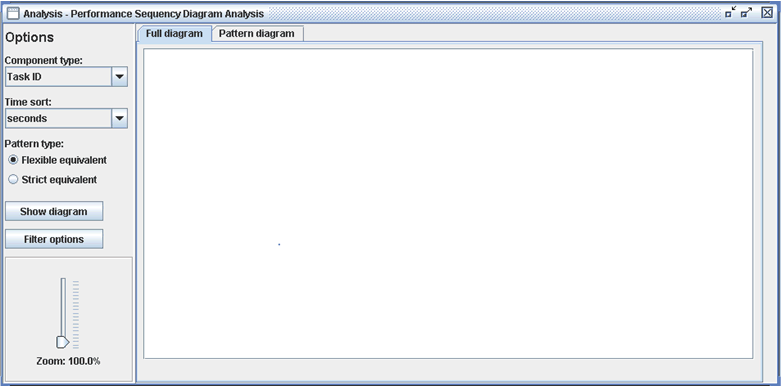
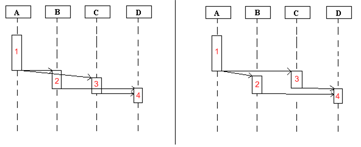
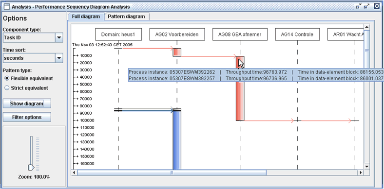
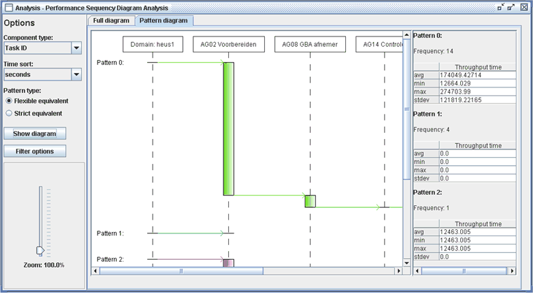
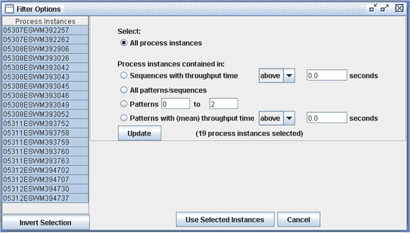

The purpose of the performance sequence diagram plug-in is to provide you with a means to assess the performance of your processes. This plug-in can especially be of help if you want to know what behavior in your processes is common, what behavior is rare and what behavior may result in extreme situations (e.g. instances with extremely high throughput times). What is more, it can assist you in finding the causes of such behavior.
In the logs of today's information systems, a lot of information is recorded. This plug-in will focus on information that is
stored on the audit trail entry level of the logs. In an audit trail entry, information about one event is recorded.
Common information stored at the audit trail entry level includes:
Though one could also think of other information that may be stored here, such as:
This plug-in allows you to focus on a certain data-element (such as taskID, originator, department) and see how transfer of work between instances of the selected data-element (for instance in case of originator this can be Nick or John) takes place for each case. The transfer of work is displayed in a sequence diagram, in which you can easily see which data-elements cooperate. What is more, this plug-in takes the sequences that visualize the transfer of work, and compares them against each other to see if they follow the same pattern. The found patterns are then displayed in a separate diagram: the pattern diagram. Here the patterns are displayed, sorted based on the frequency of sequences that follow the pattern (the pattern with the highest frequency if displayed at the top). Furthermore, information such as the mean throughput time of the patterns is available as well here. Using this information, you can easily determine which patterns appear often, and thus seem to be common behavior, which not (rare, maybe even unwanted, behavior) and which patterns result in a high throughput time, and thus may indicate unwanted behavior. With help of the patterns, you may be able to understand the causes of this unwanted behavior (a lot of time spend at a certain data-element instance perhaps). This can help you with preventing the behavior from appearing in the future.
For this plug-in only an event-log is required as input. When you start the plug-in, first log relations will be derived from this log. When this is done, you will see a screen as the one depicted below.

On the left-hand side of this screen, there are a number of options that you can set.
At the top you can choose data-element that you wish to use. Note that the types available here are dependent on the
information contained in the log.
Clearly, if departments are not mentioned in the log, then the department data-element type will not be available.
The second option available is the time sort, here you can select the unit in which the available times should be displayed.
Time sorts available here are: milliseconds, seconds, minutes, hours, days, months (30 days) and years (365 days).
The last setting that is available is the pattern type. You can choose between using the flexible-equivalent or the strict-equivalent pattern type. The difference between the both is that when using the strict-equivalent pattern type, sequences are defined to be different if data-element blocks do not start and end in exactly the same order. When using the flexible-equivalent pattern type this is not needed, though for each block in the pattern the requirement is set that all blocks that begin after this one ends, should begin after this block ends in the compared sequence as well. Let us look at an example:

When using the strict-equivalent type, the sequences in the example above are considered to be different, because in the left sequence block b0 starts (and ends) before block c0 and in the right sequence block c0 starts (and ends) before block b0. When using the flexible-equivalent type though, they are considered to be equal, because although blocks b0 and c0 do not start in the same order, the flexible-equivalent requirement is met. For both sequences we have the following:
When you have selected the settings that you wish to use, you can click on the Show Diagram-button.
After which the sequence diagram will be displayed, see for instance the example below.

When you move your mouse cursor over a sequence, information about the sequence will be displayed in the tooltip. In the example, the mouse is currently above two different sequences. So information about both sequences is displayed. This information encompasses:You can switch between the sequence diagram and the pattern diagram, by selecting the corresponding tab at the top of the screen. An example of what a pattern diagram can look like is shown below.

As you can see, information about each pattern, such as throughput time and frequency is shown on the right hand side of the screen. But you can also see information belonging to the pattern in a tooltip when you move the cursor of your mouse over the pattern. The information in the tooltip encompasses:
If the results still contain many patterns, and you only wish to view a limited number, you can click on the Filter Options-button.
You will then see the screen below.

Here you can select the process-instances that you wish to use by selecting them in the table on the left side of the screen.
But you can also select instances by selecting one of the following options, and pressing the Update-button
afterwards.
The following options is always available:
Show Diagram-button has been clicked at least once:
After you have selected the process instances that you wish to use, you can click the Use selected instances-button, after which the sequence diagram and pattern diagram will be redrawn.